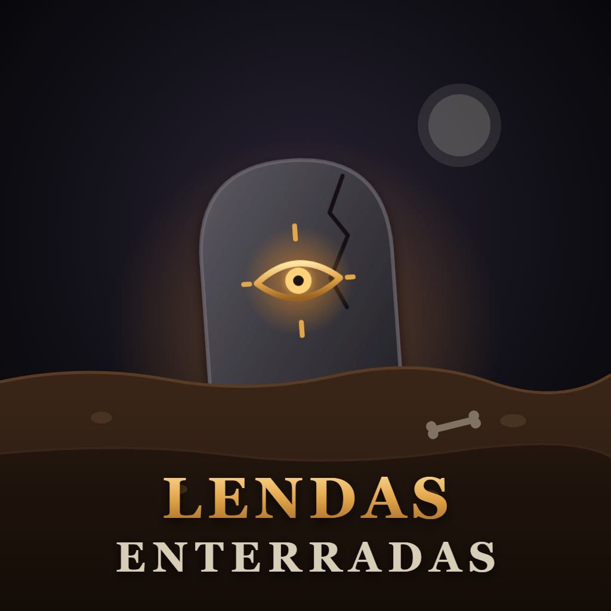

LENDAS ENTERRADASTerms of Service
Last updated: November 11, 2026
1. About the app
Lendas Enterradas ("the app") is a private desktop tool used by the creator of the Lendas Enterradas channel to publish the short videos produced for the channel to the channel's own TikTok account. It is not offered to the general public.
2. Acceptance
By connecting a TikTok account to the app, you agree to these Terms and to the Privacy Policy. You must also follow TikTok's own Terms of Service and Community Guidelines.
3. Use of TikTok features
The app uses TikTok Login Kit to connect an account and the Content Posting API to upload and publish videos that the account owner chose to post. The app only publishes content after an explicit action by the account owner, with the caption and privacy settings the owner selected.
4. Content responsibility
The account owner is solely responsible for the content published through the app and for having the rights to it.
5. Disconnecting
You may disconnect your TikTok account at any time inside the app or by removing the app's access in your TikTok settings.
6. No warranty
The app is provided "as is", without warranties of any kind. We are not liable for any loss arising from its use, including failures of third-party services such as TikTok.
7. Changes
These Terms may be updated. The date at the top of this page shows the latest version.
8. Contact
Questions: lendasenterradas@gmail.com
Resumo em português
O Lendas Enterradas é uma ferramenta particular, usada pelo criador do canal para publicar os vídeos curtos do canal na própria conta do TikTok. Ela usa o Login Kit e a Content Posting API do TikTok e só publica depois de uma ação explícita do dono da conta. O dono da conta é responsável pelo conteúdo publicado. Você pode desconectar a conta a qualquer momento. A ferramenta é fornecida "no estado em que se encontra", sem garantias.